只需教材
Microsoft Research（微软研究院）
摘要
我们介绍 phi-1，一种新的代码大型语言模型，其规模显著小于竞争模型：phi-1 是一个基于 Transformer、具有 1.3B 参数的模型，在 8 张 A100 上训练 4 天，使用从网上选取的“教材质量”数据（6B token），以及用 GPT-3.5 合成的教材和练习（1B token）。尽管规模很小，phi-1 在 HumanEval 上达到 50.6% 的 pass@1 准确率，在 MBPP 上达到 55.5%。与 phi-1-base（在代码练习数据集上进行微调之前的模型）和 phi-1-small 相比，它还展现出令人惊讶的涌现特性；phi-1-small 是使用与 phi-1 相同流程训练的较小 350M 参数模型，仍在 HumanEval 上达到 45%。
1 引言
过去十年，训练大型人工神经网络的技术取得了非凡进展，尤其是在 Transformer 架构被发现后 [VSP+17]；然而，对这一成功背后的科学理解仍然有限。在纷繁复杂、令人困惑的结果中，与 Transformer 出现时间大致相同，一种秩序开始显现：随着计算量或网络规模扩大，性能会以某种可预测的方式改善 [HNA+17]。这一现象现在称为 scaling laws [KMH+20]。此后，深度学习中对规模的探索受到这些 scaling laws 的指导 [BMR+20]，而这些规律的变体被发现后，性能又迅速跃升 [HBM+22]。本工作沿着 Eldan 和 Li [EL23] 的思路，探索沿另一个轴——数据质量——能够获得的提升。人们早已知道，质量更高的数据会带来更好的结果；例如，数据清洗是现代数据集创建的重要组成部分 [RSR+20]，还能带来其他益处，例如适度缩小数据集 [LYR+23, YGK+23]，或允许对数据进行更多轮训练 [MRB+23]。Eldan 和 Li 最近关于 TinyStories（一个通过合成生成、用于教神经网络英语的高质量数据集）的工作表明，高质量数据的作用远超这些：提高数据质量可以显著改变 scaling laws 的形态，有可能以更精简的训练／模型达到大规模模型的性能。在本文中，我们超越 Eldan 和 Li 的初步探索，表明高质量数据甚至能提升大型语言模型（LLM）的当前最优水平，同时大幅减少数据集规模和训练计算量。尤其是，训练需求更少的小模型能够显著降低 LLM 的环境成本 [BGMMS21]。
我们关注面向代码训练的 LLM，具体是像 [CTJ+21] 那样，根据文档字符串编写简单的 Python 函数。该工作提出的评估基准 HumanEval，已被广泛用于比较 LLM 的代码性能。我们通过（接续下一页）
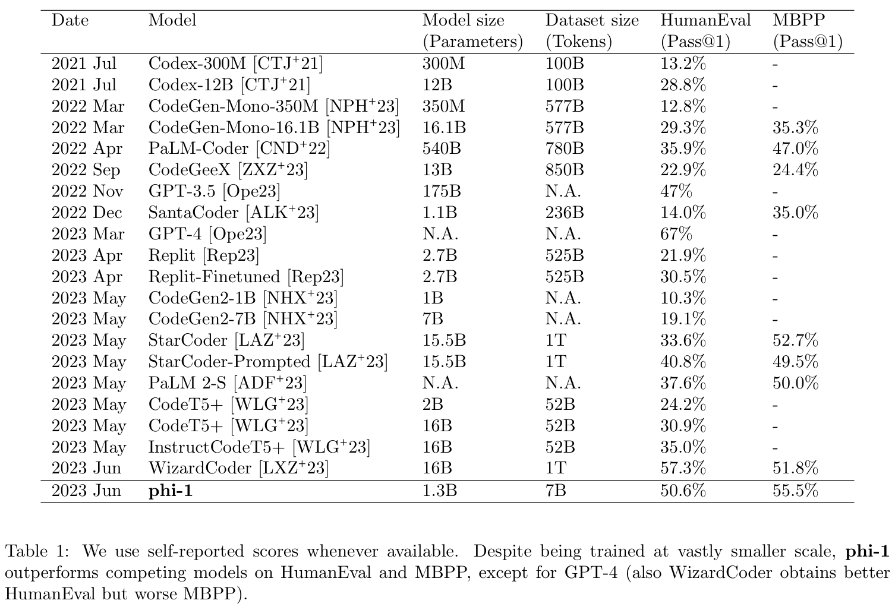
（接续上一页）训练一个称为 phi-1 的 1.3B 参数模型，展示高质量数据突破现有 scaling laws 的力量：模型在 7B token 上训练约 8 遍（累计见过略多于 50B token），随后在不足 200M token 上微调。大体来说，预训练使用“教材质量”数据，既有使用 GPT-3.5 合成的数据，也有从网页来源过滤的数据；微调则使用“教材练习式”数据。尽管数据集规模和模型规模都比竞争模型小了数个数量级（见表 1），我们在 HumanEval 上达到 50.6% 的 pass@1 准确率，在 MBPP（Mostly Basic Python Programs）上达到 55.5% 的 pass@1 准确率，这是只使用一次 LLM 生成时，已自行报告结果中的最佳水平之一。第 2 节提供训练过程的一些细节，并讨论证明数据选择过程对取得这一结果十分重要的证据。此外，尽管训练所用 token 远少于现有模型，phi-1 仍展现涌现特性。第 3 节讨论这些涌现特性，并通过将 phi-1 的输出与 phi-1-small 的输出比较，确认参数数量对涌现起关键作用的假设（例如，见 [WTB+22]）；phi-1-small 采用相同训练流程，但只有 350M 参数。本节的方法类似于《Sparks of AGI》[BCE+23] 中的思路，该文主张摆脱静态基准来测试 LLM 性能。最后，第 4 节讨论评估模型的替代基准，第 5 节研究训练数据相对于 HumanEval 的潜在污染。我们发布模型，供更广泛的社区使用和评估，但出于专有信息方面的考虑，省略合成数据生成的部分细节。
更多相关工作。本工作属于近期利用 LLM 进行程序合成的研究，更多参考资料见 [CTJ+21, NPH+22]。我们的方法也属于一个正在兴起的趋势，即（接续下一页）
（接续上一页）使用现有 LLM 合成数据，用于训练新一代 LLM [WKM+22, TGZ+23, MMJ+23, LGK+23, JWJ+23]。关于这种“递归训练”是否会使所得 LLM 的能力范围变窄，仍存在争论 [SSZ+23, GWS+23]；不同观点见 [MMJ+23]。注意，本文与 [JWJ+23] 类似，关注一个较窄的任务；在这种情况下，在该特定任务上取得优于教师 LLM 的性能似乎是合理的，后者论文也提出了这一论点。
2 训练细节与高质量数据的重要性
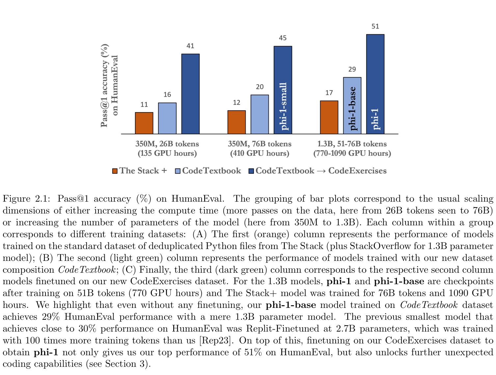
正如标题所暗示，我们模型的核心要素是具有教材质量的训练数据。此前工作通常使用标准文本来源进行代码生成，例如 The Stack [KLA+22]（包含来自采用宽松许可证仓库的源代码），以及其他网页数据集（例如 StackOverflow 和 CodeContest [LCC+22]）。与之不同，我们认为这些来源不是教会模型进行算法推理与规划的最佳选择。另一方面，我们的模型架构和训练方法相当常规（第 2.3 节），因此本节主要解释我们如何整理数据。
标准代码数据集 [KLA+22, LCC+22] 构成了大型、多样的语料库，覆盖广泛主题和使用场景。不过，人工检查随机样本后，我们发现其中许多片段对学习基本编程并没有很强的指导性，并存在若干缺点：
- 许多样本不是自包含的，即它们依赖代码片段之外的其他模块或文件；没有额外上下文，就难以理解。
- 典型例子不涉及有意义的计算，而是琐碎代码或样板代码，例如定义常量、设置参数、配置 GUI 元素。
- 包含算法逻辑的样本往往埋藏在复杂或缺乏文档说明的函数中，难以理解或从中学习。
- 例子偏向某些主题或使用场景，导致整个数据集中的编程概念和技能分布不均衡。
可以想象，人工学习者尝试从这些数据集中掌握编程技能，会多么令人沮丧且低效，因为他们必须处理大量噪声、歧义和不完整内容。我们假设，这些问题同样影响语言模型性能，因为它们降低了将自然语言映射为代码的信号质量与数量。我们推测，语言模型将受益于具有优质“教材”同样特征的训练集：清晰、自包含、有指导性且均衡。
本文直接应对这一挑战，并表明通过有意识地选择和生成高质量数据，可以用远小于现有方法的模型和计算量，在代码生成任务上获得当前最优结果。我们的训练依赖三个主要数据集：
- 过滤后的代码—语言数据集，是 The Stack 和 StackOverflow 的子集，通过基于语言模型的分类器获得，约含 6B token。
- 合成教材数据集，包含由 GPT-3.5 生成的 Python 教材，不足 1B token。
- 小型合成练习数据集，包含 Python 练习及解答，约 180M token。
下面的小节更详细地描述这些数据集。上述数据集合计不足 7B token。我们将过滤后的代码—语言数据集与合成教材数据集的组合称为“CodeTextbook”，在预训练阶段使用它得到基础模型 phi-1-base；这一模型已经在 HumanEval 上达到有竞争力的 29% 性能。随后，我们使用称为“CodeExercises”的 180M token 合成练习数据集微调 phi-1-base，得到 phi-1。尽管 CodeExercises 数据集规模很小，使用它微调，不仅对图 2.1 所示的简单 Python 函数生成性能大幅改善至关重要，而且更广泛地解锁了 phi-1 中许多有趣的涌现能力，这些能力在 phi-1-base 中没有观察到（见第 3 节）。
2.1 使用基于 transformer 的分类器过滤现有代码数据集
我们从公开 Python 代码数据集开始：使用 The Stack 去重版本的 Python 子集和 StackOverflow，二者合计超过 3500 万个文件／样本，总计超过 35B token。我们用 GPT-4 标注这些文件中一个小子集的质量（约 100K 样本）：给定代码片段，提示模型“判断它对目标为学习基本编程概念的学生有何教育价值”。
随后使用标注数据集训练随机森林分类器，以预训练 CodeGen 模型输出的 embedding 作为特征，预测文件／样本的质量。注意，与大量用于生成合成内容的 GPT-3.5 不同（下文讨论），我们仅最低限度地使用 GPT-4，标注 The Stack 和 StackOverflow 小部分样本的质量。因此，我们将对 GPT-4 的使用仅视为避免繁琐人工标注工作的一种方式 [DLT+23]。
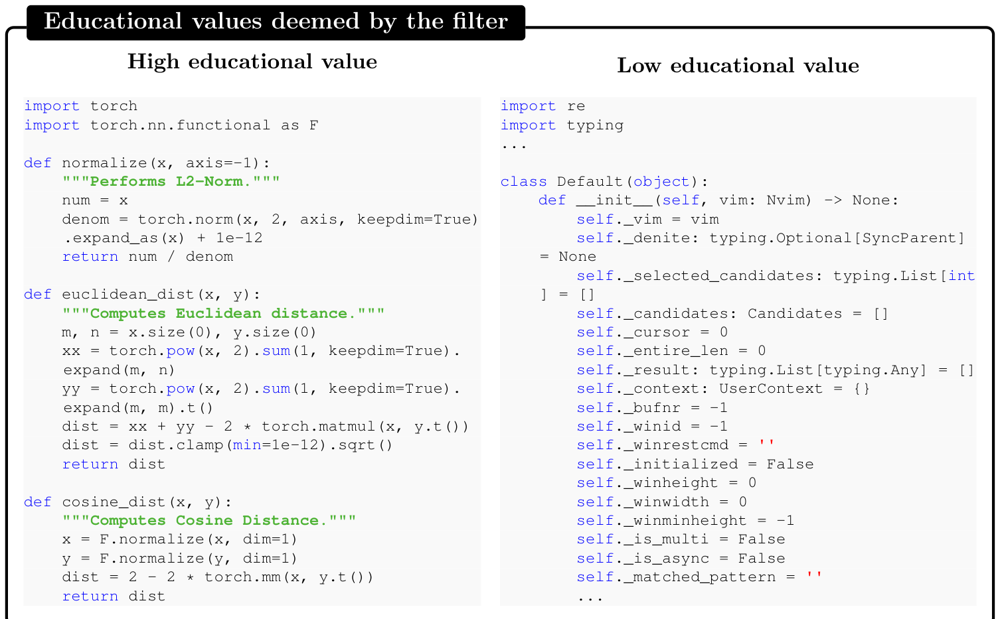
即使不加入下面讨论的合成数据集，我们的过滤方法也显著提升模型性能：对于在未过滤的 The Stack（去重 Python）与 StackOverflow 上训练的 350M 参数模型，即使训练 96K 步（约 200B token），HumanEval 性能仍在 12.19% 处饱和；而在过滤子集上训练 36K 步后，HumanEval 达到 17.68%。进一步使用过滤数据集与下文合成教材数据集的组合训练后，我们将其提高到 20.12%（图 2.1 报告的数值）。
2.2 创建具有教材质量的合成数据集
创建高质量代码生成数据集的主要挑战之一，是确保例子多样且不重复。多样性指例子应覆盖广泛编程概念、技能和场景，并在难度、复杂性和风格上有所变化。多样性很重要，原因包括：使语言模型接触用代码表达和解决问题的不同方式，降低过拟合或记忆特定模式或解法的风险，以及提高模型对未见或新任务的泛化能力和稳健性。然而，实现多样性并不简单，尤其当使用另一个语言模型生成的合成数据时。仅仅提示模型生成编程教材或一组练习，即使对指令或参数进行一些变化，也很可能得到非常同质、冗余的数据集，其中相同概念和解法只是稍作变化，反复出现。这是因为语言模型倾向于沿着其训练数据和先验决定的最可能或最常见路径前进，缺乏探索其他或新颖代码生成方式的创造力或动机。因此，需要找到合适的“技巧”，引导语言模型生成更有创造性、更丰富的输出，同时保持例子的质量与连贯性。[EL23] 中的做法启发了我们：他们在提示中加入从固定词表随机抽取的（接续下一页）
（接续上一页）词语子集，并要求在生成文本中以某种方式组合这些词，从而创建多样化的短故事。我们寻求向提示中注入随机性的方法，使其产生多样化数据集。
合成教材数据集
该数据集包含不足 1B token 的 GPT-3.5 生成的 Python 教材，旨在提供高质量、以自然语言为主并穿插相关代码片段的文本来源。我们还将教材内容定位于促进推理与基本算法技能的主题。通过约束生成教材的主题和目标读者，实现多样性。下面是一段合成教材中的文本示例：
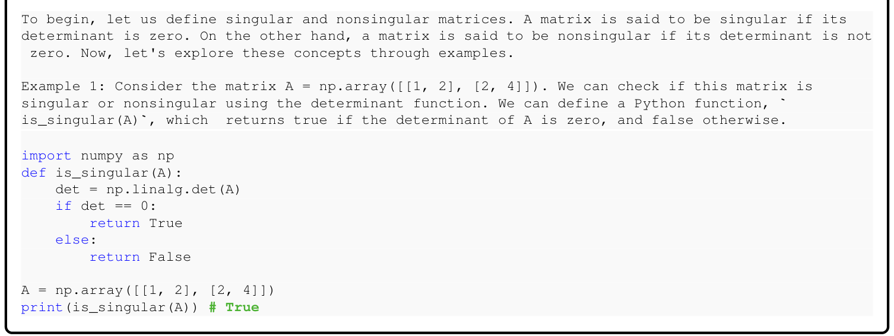
CodeExercises 数据集
这是一个小型合成练习数据集，包含不足 180M token 的 Python 练习和解答。每道练习是一段需要补全的函数文档字符串。该数据集旨在对齐模型，使其能够根据自然语言指令完成函数补全任务。它也由 GPT-3.5 生成，其中引导多样性的主要方式是约束函数名。尤其对于这一数据集，我们将在后续小节中明确去除污染并进行替代评估，以确保微调时未见过与 HumanEval 基准类似的题目。以下代码片段展示一道合成练习。
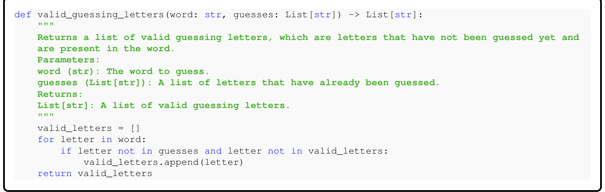
2.3 模型架构与训练
我们使用仅解码器 transformer [VSP+17] 模型，采用 multi-head attention（MHA）的 FlashAttention 实现 [DFE+22]。我们还沿用 CodeGen [NPH+22]、PaLM [CND+22] 和 GPT-NeoX [BBH+22] 等近期模型，将 MHA 与 MLP 层配置为并行。1.3B 参数 phi-1 模型的架构包含 24 层，隐藏维度为 2048，MLP 内部维度为 8192，以及 32 个每个维度为 64 的 attention 头。较小的 350M 参数 phi-1-small 模型包含 20 层，隐藏维度为 1024，MLP 内部维度为 4096，以及 16 个每个维度为 64 的 attention 头。我们还使用旋转位置 embedding [SLP+21]，旋转维度为 32。这些架构选择沿用自 [NPH+22]。我们采用与 codegen-350M-mono [NPH+22] 相同的 tokenizer。除 FlashAttention 外，我们的模型没有使用 Fill-In-the-Middle（FIM）[BJT+22] 或 Multi-Query-Attention（MQA）[RSR+20] 等其他技术；这些技术可能进一步提高性能和效率 [LAZ+23]。
在预训练与微调中，我们都将相应数据集拼接成一维数组，用“<|endoftext|>”token 分隔文件。我们从数据集数组中切出长度为 2048 的序列，以 next-token 预测损失训练模型。我们采用 fp16 训练、AdamW 优化器、线性 warmup—线性衰减学习率调度，以及 0.1 的 attention 和残差 dropout。训练使用 8 张 Nvidia A100 GPU 和 DeepSpeed。预训练基础模型 phi-1-base 的训练耗时不到 4 天；在相同硬件上，微调得到 phi-1 额外耗时 7 小时。
预训练。phi-1-base 在 CodeTextbook 数据集（过滤后的代码—语言语料与合成教材）上训练。有效 batch 大小为 1024（包括数据并行和 gradient 累积），最大学习率为 1e-3，在前 750 步进行 warmup，权重衰减为 0.1，总共训练 36,000 步。我们选取第 24,000 步的 checkpoint 作为 phi-1-base；这相当于在 CodeTextbook 上约 8 个 epoch，累计训练 token 略多于 50B。尽管规模和计算量很小，模型在 HumanEval 上已达到 29% 准确率。
微调。phi-1 由 phi-1-base 在 CodeExercises 数据集上微调得到。微调采用与预训练相同的设置，但使用不同超参数：有效 batch 大小为 256，最大学习率为 1e-4，前 50 步 warmup，权重衰减为 0.01。总共训练 6000 步，选取最佳 checkpoint（每 1000 步保存一次）。
3 在 CodeExercises 上微调后模型能力的跃升
图 2.1 显示，HumanEval 的最大提升来自在小型 CodeExercises 数据集（不足 200M token）上微调。CodeExercises 完全由仅使用 Python 基础库的简短 Python 任务组成。本节表明，一个相当显著的现象是：微调后的模型在执行微调数据集中未出现的任务时，也表现出大幅提升。这包括处理复杂算法任务和使用外部库。这说明，微调过程可能帮助模型重新组织、巩固预训练中获得的知识，即使这些知识并未明确出现在 CodeExercises 中。本节重点定性比较微调模型 phi-1 与其预训练的 1.3B 参数基础模型 phi-1-base 的能力。
3.1 微调提升模型的理解能力
利用我们自行创建的一个简单 Python 函数，下面可以观察到，模型微调后对指令的理解和遵从程度显著提高。尤其是，我们看到（接续下一页）
（接续上一页）phi-1-base 难以处理提示中的逻辑关系，而 phi-1 能正确理解问题并生成答案。在这个例子中，即使是 350M 参数的 phi-1-small，也显示出一定的问题理解能力，虽然最终解法错误。我们在交互中持续观察到这些趋势，附录 A 提供另一个例子。
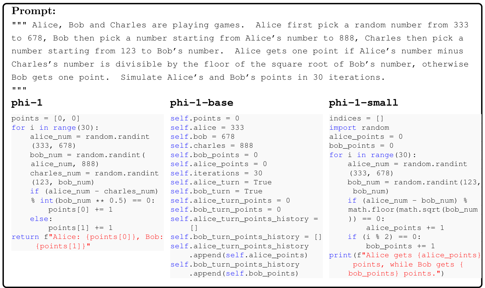
3.2 微调提升模型使用外部库的能力
下面展示，在 CodeExercises 上微调，意外地提升了模型使用 Pygame 和 Tkinter 等外部库的能力，尽管我们的练习中没有这些库。这表明，微调不仅改善了目标任务，还让与之无关的任务知识更容易从预训练中提取出来。作为参考，图 3.1 展示 CodeExercises 数据集中包导入的分布。
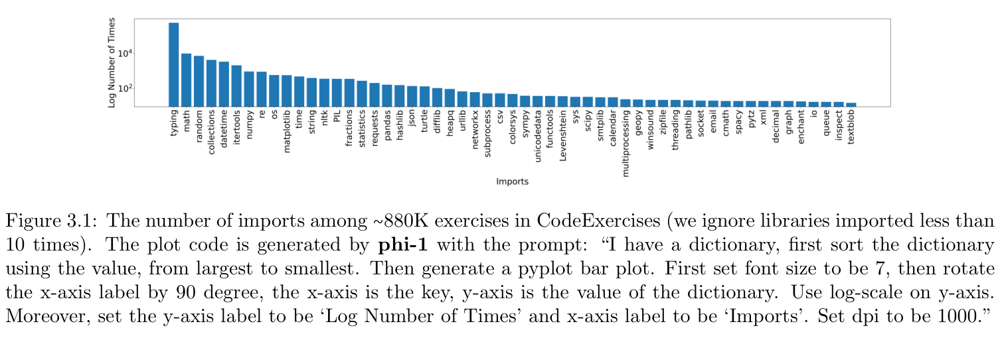
PyGame 示例。首先是一个 PyGame 示例，要求模型生成移动小球的代码：
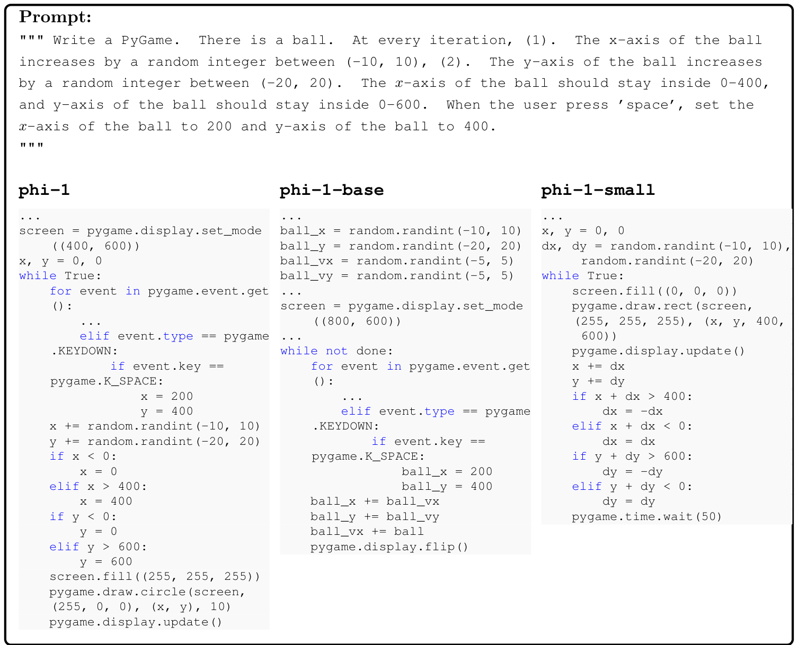
上述代码片段展示一个简单 PyGame 程序的主循环，使小球在屏幕上弹动。phi-1 按提示要求，正确使用 PyGame 函数更新并绘制小球。phi-1-base 和 phi-1-small 生成的函数调用在语法上正确，但语义上不相关。我们可以看到，phi-1-base 显示出一定的正确 API 调用能力，却无法遵循任务逻辑；而微调后的 phi-1-small 理解逻辑，却没有足够容量学习正确的函数调用。
TKinter 示例。第二个例子是一个 TKinter 应用，我们要求模型在用户点击按钮时，相应地更新文本框。
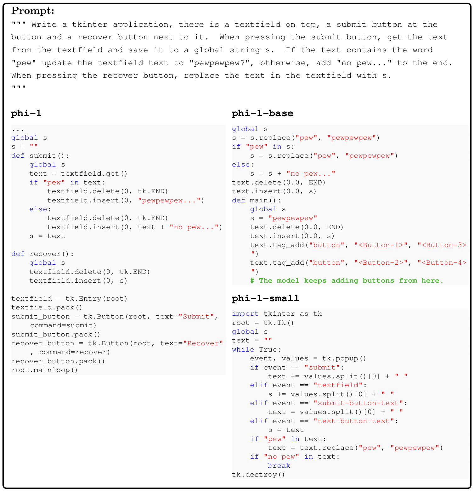
三个模型的补全结果显示，它们在提示理解上存在巨大差距。phi-1-base 和 phi-1-small 都未能使用正确的 Tkinter API，并编造了无意义的函数调用。另一方面，phi-1 正确实现了 GUI 和所有功能（但没有正确复制“pewpewpew?”）。附录 A 中另有两个关于 PyTorch 与 Pyplot 的例子。
聊天模式示例。最后，尽管聊天数据仅在预训练中出现、没有用于微调，我们表明 phi-1 的聊天能力仍优于 phi-1-base。
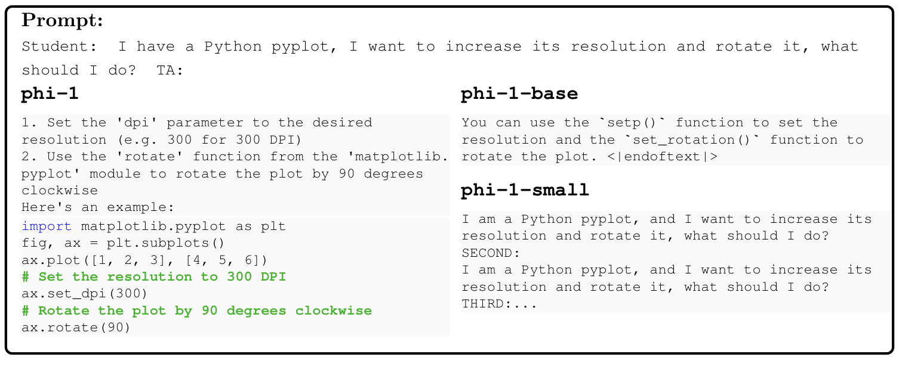
4 使用 LLM 评分评估非常规问题
phi-1 在 HumanEval 上的表现出奇地好（见表 1 和图 2.1），由此可能产生一种担忧：合成 CodeExercises 数据集受到污染，导致模型记忆答案。第 5 节直接研究这种潜在污染；本节则通过新评估应对这一担忧，评估问题刻意设计得足够非常规，使其不太可能出现在训练数据集中。
为尽量减少偏差与泄漏，新评估问题由一个专门团队创建，该团队未接触 CodeExercises 数据集或最终模型。他们按 HumanEval 的相同格式创建了 50 个新问题，并被要求设计不太可能出现在现实代码库或编程练习中的问题。以下是这样的一个问题：
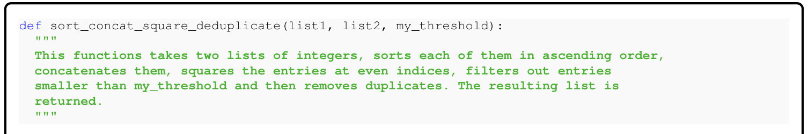
在代码任务上评估语言模型的挑战之一，是模型输出通常以二元方式判断：代码要么通过全部单元测试，要么失败。但这不能体现模型表现的细微差别，因为模型可能生成几乎正确、仅有小错误的代码，也可能生成完全错误却碰巧通过部分测试的代码。更有信息量的评估方式，可以是把模型输出与正确解法比较，根据它与期望逻辑的吻合程度评分。这类似于编程面试中对人的评估：面试官不仅运行代码，还检查推理过程和解法质量。
因此，为评估候选解法，我们采用 GPT-4 为解法评分的方法（例如 [EL23] 中的做法）。该方法有两个明显优势：（1）利用 GPT-4 作为评分者，可借助其知识与生成能力，获得关于学生模型编程能力更细致、更有意义的信号；（接续下一页）
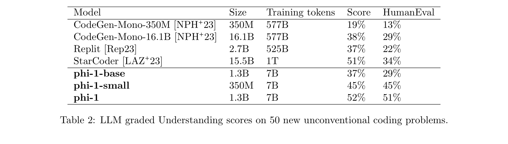
（接续上一页）（2）不再需要编写测试。1 我们的提示要求 LLM 先用简短文字评价学生解法，再给出 0 到 10 的分数。
表 2 展示 phi-1 和竞争模型的结果。新非常规问题上的评分排序，与 HumanEval 的排序相同（见表 1）。phi-1 再次取得显著高于 StarCoder 的分数，与 HumanEval 上的表现一致。鉴于新问题不可能污染训练数据，而且特意设计在训练分布之外，这些结果显著增强了我们对 phi-1 性能有效性的信心。
5 通过数据剪枝进行无偏性能评估
图 2.1 显示，在 CodeExercises 上训练，大幅提升模型在 HumanEval 基准上的表现。为研究这一提升，我们提出从 CodeExercises 中移除与 HumanEval 文件“相似”的文件，对数据集进行剪枝。这可视为一种“强形式”的去污染。随后在剪枝数据上重新训练模型，仍能在 HumanEval 上观察到很强的性能。尤其是，即使积极删除超过 40% 的 CodeExercises 数据（甚至删除与 HumanEval 只是模糊相似的文件，见附录 C），重新训练的 phi-1 仍优于 StarCoder。
我们认为，这种数据剪枝实验是一种公平的性能评估方式，比文献中标准的“污染”研究更有洞察力；后者通常基于训练数据与测试数据的重叠度量（例如 [AON+21] 的第 4.8 节）。为了完整起见，本节先进行标准污染实验，表明在该标准意义上，CodeExercises 未受 HumanEval 污染。
5.1 N-gram 重叠
N-gram 根据共享的连续 n 个词序列，衡量文本片段的相似性。我们计算每道 HumanEval 问题的文档字符串，与生成的 CodeExercises 中每道练习之间的 n-gram 重叠。发现 4 道 HumanEval 问题，与数据集至少一个条目存在 13-gram 重叠。进一步检查后发现，这 4 个 13-gram 重叠案例全部是假阳性，例如下一页的例子。N-gram 重叠分析表明，我们的数据集与 HumanEval 在逐字内容上的重叠极少。
1 开发严格的测试集合可能是一项艰巨工作，正如 [LXWZ23] 所示。
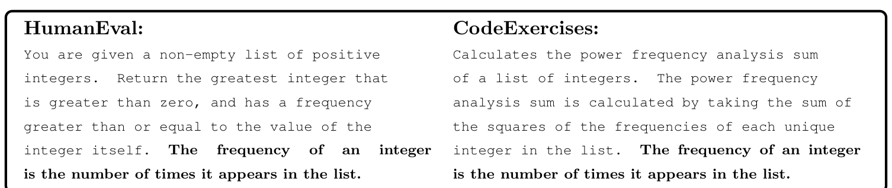
5.2 基于 embedding 与语法的相似性分析
正如刚才所见，n-gram 分析不够精细，无法找到 HumanEval 与 CodeExercises 中相似的代码片段。我们改用 embedding 距离与基于语法的距离相结合。对于 embedding 距离，我们计算代码片段 embeddings 之间的 L2 距离，embedding 来自预训练 CodeGen-Mono 350M 模型 [NPH+23]。我们发现，embedding 距离能够捕获整体代码语义相似的代码对；这种相似性可以通过 Python 文档字符串、函数／类名以及代码结构推断。对于基于语法的距离，我们计算两段给定代码的抽象语法树（AST）之间的（字符串）编辑距离。AST 距离能够有效识别代码对中的重叠部分，同时不依赖变量／函数命名、注释、Python 文档字符串等非语法文本。在 CodeExercises 剪枝中，我们固定 embedding 距离阈值，并对 AST 距离测试多个匹配率 \(\tau\)。附录 C 展示用 embedding 距离及不同 AST 匹配率 \(\tau\) 捕获的代码对示例。我们使 \(\tau\) 在 0.95 到 0.8 之间变化，相当于从 CodeExercises 总共 879.5K 个问题中移除 42.5K 到 354K 个。
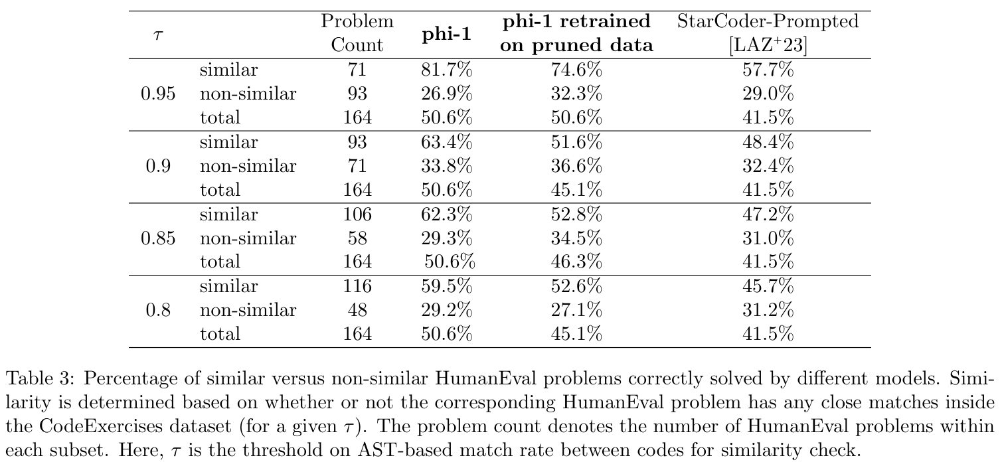
表 3 汇总了在剪枝数据集（\(\tau=0.95,0.9,0.85,0.8\)）上重新训练的 phi-1，与在完整 CodeExercises 上训练的原始 phi-1 及 15.5B 参数 StarCoder-Prompted 的性能比较。我们依据每道 HumanEval 问题在原始 CodeExercises 中是否存在至少一个接近匹配（对于给定 \(\tau\)），将 HumanEval 分为“相似”和“不相似”两个子集。随后分别报告模型在两个子集上的准确率。可以看到，即使大量剪枝后，phi-1 仍显著（接续下一页）
（接续上一页）优于 StarCoder-Prompted，这证实我们的性能提升并非由数据集“污染”造成，即使宽泛理解这一术语也是如此。还应注意，所有模型在 HumanEval 不相似子集上的准确率都低于相似子集。
6 结论
正如一本内容全面、精心编写的教材能为学生提供掌握新学科所需的知识，我们的工作展示了高质量数据对提升语言模型代码生成熟练度的显著作用。通过构建“教材质量”数据，我们训练出的模型在 HumanEval 和 MBPP 等编程基准上超过几乎全部开源模型，尽管模型规模小 10 倍、数据集规模小 100 倍。我们假设，这样的高质量数据提供了清晰、自包含、有指导性且均衡的编程概念与技能示例，因此显著改善代码语言模型的学习效率。
与较大的代码模型相比，我们的模型仍存在若干局限。首先，phi-1 专门针对 Python 编程，与多语言模型相比，其通用性受到限制。其次，phi-1 缺少较大模型拥有的领域专门知识，例如使用特定 API 编程，或使用不太常见的软件包。最后，由于数据集结构化，且语言和风格缺少多样性，phi-1 对提示中的风格变化或错误不够稳健；例如，提示出现语法错误时，性能明显下降。附录 B 更详细讨论这些局限，并给出 phi-1 失败模式的例子。
这些局限似乎都不是根本性的；通过更多工作，我们的方法可以用于解决每个问题，但不清楚需要怎样扩大规模才能克服它们，包括模型规模和数据集规模。我们还认为，用 GPT-4 替代 GPT-3.5 生成合成数据可能带来显著收益，因为我们注意到 GPT-3.5 数据的错误率较高。尽管有这些错误，phi-1 仍能达到如此高的编程熟练度，这很有趣；[AZL23] 中也观察到类似现象，语言模型可以用错误率 100% 的数据训练，在测试时仍生成正确答案。
更广泛地说，我们的工作提供证据，表明开发创建高质量数据集的良好方法，是推进自然语言处理及相关领域的一项核心研究方向（更多证据见 [JWJ+23]）。然而，创建高质量数据集并不容易，需要解决多项挑战。其中一项是确保数据集涵盖希望模型学习的全部相关内容与概念，并以均衡、有代表性的方式覆盖。另一项是确保数据集真正多样、不重复，使模型不会仅仅过拟合数据或记忆特定模式或解法。这要求找到向数据生成过程注入随机性和创造力的方式，同时保持例子的质量和连贯性。此外，即使创建了这样的数据集，我们仍缺乏衡量和评估数据多样性与冗余程度的良好方法。例如，对于一个编程练习数据集，很难确定每道练习有多少不同变体，以及它们在数据集中如何分布。最后，随着语言模型本身将被用于为未来的语言模型整理数据，研究训练这些模型的伦理和社会影响变得更加迫切，包括过程中涉及的数据与模型的问责性、透明度和偏见。
参考文献
[ADF+23] Rohan Anil, Andrew M Dai, Orhan Firat, Melvin Johnson, Dmitry Lepikhin, Alexandre Passos, Siamak Shakeri, Emanuel Taropa, Paige Bailey, Zhifeng Chen, et al. PaLM 2 技术报告. arXiv preprint arXiv:2305.10403, 2023.
[ALK+23] Loubna Ben Allal, Raymond Li, Denis Kocetkov, Chenghao Mou, Christopher Akiki, Carlos Munoz Ferrandis, Niklas Muennighoff, Mayank Mishra, Alex Gu, Manan Dey, et al. SantaCoder：不要好高骛远！ arXiv preprint arXiv:2301.03988, 2023.
[AON+21] Jacob Austin, Augustus Odena, Maxwell Nye, Maarten Bosma, Henryk Michalewski, David Dohan, Ellen Jiang, Carrie Cai, Michael Terry, Quoc Le, et al. 利用大型语言模型进行程序合成. arXiv preprint arXiv:2108.07732, 2021.
[AZL23] Zeyuan Allen-Zhu and Yuanzhi Li. 语言模型的物理学：第 1 部分，上下文无关文法. arXiv preprint arXiv:2305.13673, 2023.
[BBH+22] Sid Black, Stella Biderman, Eric Hallahan, Quentin Anthony, Leo Gao, Laurence Golding, Horace He, Connor Leahy, Kyle McDonell, Jason Phang, Michael Pieler, USVSN Sai Prashanth, Shivanshu Purohit, Laria Reynolds, Jonathan Tow, Ben Wang, and Samuel Weinbach. GPT-NeoX-20B：一个开源自回归语言模型. In Proceedings of the ACL Workshop on Challenges & Perspectives in Creating Large Language Models, 2022.
[BCE+23] Sébastien Bubeck, Varun Chandrasekaran, Ronen Eldan, Johannes Gehrke, Eric Horvitz, Ece Kamar, Peter Lee, Yin Tat Lee, Yuanzhi Li, Scott Lundberg, et al. 通用人工智能的火花：GPT-4 的早期实验. arXiv preprint arXiv:2303.12712, 2023.
[BGMMS21] Emily M Bender, Timnit Gebru, Angelina McMillan-Major, and Shmargaret Shmitchell. 论随机鹦鹉的危险：语言模型是否可能过于庞大？ In Proceedings of the 2021 ACM Conference on Fairness, Accountability, and Transparency, pages 610–623, 2021.
[BJT+22] Mohammad Bavarian, Heewoo Jun, Nikolas Tezak, John Schulman, Christine McLeavey, Jerry Tworek, and Mark Chen. 高效训练语言模型完成中间填充. arXiv preprint arXiv:2207.14255, 2022.
[BMR+20] Tom Brown, Benjamin Mann, Nick Ryder, Melanie Subbiah, Jared D Kaplan, Prafulla Dhariwal, Arvind Neelakantan, Pranav Shyam, Girish Sastry, Amanda Askell, Sandhini Agarwal, Ariel Herbert-Voss, Gretchen Krueger, Tom Henighan, Rewon Child, Aditya Ramesh, Daniel Ziegler, Jeffrey Wu, Clemens Winter, Chris Hesse, Mark Chen, Eric Sigler, Mateusz Litwin, Scott Gray, Benjamin Chess, Jack Clark, Christopher Berner, Sam McCandlish, Alec Radford, Ilya Sutskever, and Dario Amodei. 语言模型是少样本学习者. In Advances in Neural Information Processing Systems, volume 33, pages 1877–1901, 2020.
[CND+22] Aakanksha Chowdhery, Sharan Narang, Jacob Devlin, Maarten Bosma, Gaurav Mishra, Adam Roberts, Paul Barham, Hyung Won Chung, Charles Sutton, Sebastian Gehrmann, et al. PaLM：利用 Pathways 扩展语言建模. arXiv preprint arXiv:2204.02311, 2022.
[CTJ+21] Mark Chen, Jerry Tworek, Heewoo Jun, Qiming Yuan, Henrique Ponde de Oliveira Pinto, Jared Kaplan, Harri Edwards, Yuri Burda, Nicholas Joseph, Greg Brockman, et al. 评估用代码训练的大型语言模型. arXiv preprint arXiv:2107.03374, 2021.
[DFE+22] Tri Dao, Dan Fu, Stefano Ermon, Atri Rudra, and Christopher Ré. FlashAttention：具有 IO 感知能力的快速、内存高效的精确 attention. Advances in Neural Information Processing Systems, 35:16344–16359, 2022.
[DLT+23] Yann Dubois, Xuechen Li, Rohan Taori, Tianyi Zhang, Ishaan Gulrajani, Jimmy Ba, Carlos Guestrin, Percy Liang, and Tatsunori B Hashimoto. AlpacaFarm：用于从人类反馈学习的方法的模拟框架. arXiv preprint arXiv:2305.14387, 2023.
[EL23] Ronen Eldan and Yuanzhi Li. TinyStories：语言模型最小可以做到多小，而仍能说连贯英语？ arXiv preprint arXiv:2305.07759, 2023.
[GWS+23] Arnav Gudibande, Eric Wallace, Charlie Snell, Xinyang Geng, Hao Liu, Pieter Abbeel, Sergey Levine, and Dawn Song. 模仿专有 LLM 的虚假承诺. arXiv preprint arXiv:2305.15717, 2023.
[HBM+22] Jordan Hoffmann, Sebastian Borgeaud, Arthur Mensch, Elena Buchatskaya, Trevor Cai, Eliza Rutherford, Diego de las Casas, Lisa Anne Hendricks, Johannes Welbl, Aidan Clark, Tom Hennigan, Eric Noland, Katherine Millican, George van den Driessche, Bogdan Damoc, Aurelia Guy, Simon Osindero, Karen Simonyan, Erich Elsen, Oriol Vinyals, Jack William Rae, and Laurent Sifre. 计算最优大型语言模型训练的实证分析. In Alice H. Oh, Alekh Agarwal, Danielle Belgrave, and Kyunghyun Cho, editors, Advances in Neural Information Processing Systems, 2022.
[HNA+17] Joel Hestness, Sharan Narang, Newsha Ardalani, Gregory Diamos, Heewoo Jun, Hassan Kianinejad, Md Mostofa Ali Patwary, Yang Yang, and Yanqi Zhou. 实证表明深度学习的规模扩展是可预测的. arXiv preprint arXiv:1712.00409, 2017.
[JWJ+23] Jaehun Jung, Peter West, Liwei Jiang, Faeze Brahman, Ximing Lu, Jillian Fisher, Taylor Sorensen, and Yejin Choi. 不可能的蒸馏：从低质量模型到用于摘要和改写的高质量数据集与模型. arXiv preprint arXiv:2305.16635, 2023.
[KLA+22] Denis Kocetkov, Raymond Li, Loubna Ben Allal, Jia Li, Chenghao Mou, Carlos Muñoz Ferrandis, Yacine Jernite, Margaret Mitchell, Sean Hughes, Thomas Wolf, et al. The Stack：3 TB 采用宽松许可的源代码. arXiv preprint arXiv:2211.15533, 2022.
[KMH+20] Jared Kaplan, Sam McCandlish, Tom Henighan, Tom B Brown, Benjamin Chess, Rewon Child, Scott Gray, Alec Radford, Jeffrey Wu, and Dario Amodei. 神经语言模型的 scaling laws. arXiv preprint arXiv:2001.08361, 2020.
[LAZ+23] Raymond Li, Loubna Ben Allal, Yangtian Zi, Niklas Muennighoff, Denis Kocetkov, Chenghao Mou, Marc Marone, Christopher Akiki, Jia Li, Jenny Chim, et al. StarCoder：愿源码与你同在！ arXiv preprint arXiv:2305.06161, 2023.
[LCC+22] Yujia Li, David Choi, Junyoung Chung, Nate Kushman, Julian Schrittwieser, Rémi Leblond, Tom Eccles, James Keeling, Felix Gimeno, Agustin Dal Lago, et al. 利用 AlphaCode 进行竞赛水平的代码生成. Science, 378(6624):1092–1097, 2022.
[LGK+23] Zinan Lin, Sivakanth Gopi, Janardhan Kulkarni, Harsha Nori, and Sergey Yekhanin. 通过基础模型 API 生成满足差分隐私的合成数据 1：图像. arXiv preprint arXiv:2305.15560, 2023.
[LXWZ23] Jiawei Liu, Chunqiu Steven Xia, Yuyao Wang, and Lingming Zhang. ChatGPT 为你生成的代码真的正确吗？对大型语言模型代码生成的严格评估. arXiv preprint arXiv:2305.01210, 2023.
[LXZ+23] Ziyang Luo, Can Xu, Pu Zhao, Qingfeng Sun, Xiubo Geng, Wenxiang Hu, Chongyang Tao, Jing Ma, Qingwei Lin, and Daxin Jiang. WizardCoder：利用 Evol-Instruct 增强代码大型语言模型, 2023.
[LYR+23] Shayne Longpre, Gregory Yauney, Emily Reif, Katherine Lee, Adam Roberts, Barret Zoph, Denny Zhou, Jason Wei, Kevin Robinson, David Mimno, et al. 预训练者的训练数据指南：衡量数据年代、领域覆盖、质量与毒性的影响. arXiv preprint arXiv:2305.13169, 2023.
[MMJ+23] Subhabrata Mukherjee, Arindam Mitra, Ganesh Jawahar, Sahaj Agarwal, Hamid Palangi, and Ahmed Awadallah. Orca：从 GPT-4 的复杂解释轨迹中渐进学习. arXiv preprint arXiv:2306.02707, 2023.
[MRB+23] Niklas Muennighoff, Alexander M Rush, Boaz Barak, Teven Le Scao, Aleksandra Piktus, Nouamane Tazi, Sampo Pyysalo, Thomas Wolf, and Colin Raffel. 扩展受数据约束的语言模型. arXiv preprint arXiv:2305.16264, 2023.
[NHX+23] Erik Nijkamp, Hiroaki Hayashi, Caiming Xiong, Silvio Savarese, and Yingbo Zhou. CodeGen2：在编程语言与自然语言上训练 LLM 的经验. arXiv preprint arXiv:2305.02309, 2023.
[NPH+22] Erik Nijkamp, Bo Pang, Hiroaki Hayashi, Lifu Tu, Huan Wang, Yingbo Zhou, Silvio Savarese, and Caiming Xiong. CodeGen：支持多轮程序合成的开源大型代码语言模型. arXiv preprint, 2022.
[NPH+23] Erik Nijkamp, Bo Pang, Hiroaki Hayashi, Lifu Tu, Huan Wang, Yingbo Zhou, Silvio Savarese, and Caiming Xiong. CodeGen：支持多轮程序合成的开源大型代码语言模型. ICLR, 2023.
[Ope23] OpenAI. GPT-4 技术报告, 2023. arXiv preprint arXiv:2303.08774 [cs.CL].
[Rep23] Replit. Replit 开发者日. https://twitter.com/Replit/status/1651344184593506304, 2023.
[RSR+20] Colin Raffel, Noam Shazeer, Adam Roberts, Katherine Lee, Sharan Narang, Michael Matena, Yanqi Zhou, Wei Li, and Peter J Liu. 使用统一的文本到文本 transformer 探索迁移学习的极限. The Journal of Machine Learning Research, 21(1):5485–5551, 2020.
[SLP+21] Jianlin Su, Yu Lu, Shengfeng Pan, Bo Wen, and Yunfeng Liu. RoFormer：利用旋转位置 embedding 增强的 transformer. arXiv preprint arXiv:2104.09864, 2021.
[SSZ+23] Ilia Shumailov, Zakhar Shumaylov, Yiren Zhao, Yarin Gal, Nicolas Papernot, and Ross Anderson. 模型失智：生成数据使模型遗忘. arXiv preprint arXiv:2305.17493, 2023.
参考文献原文链接：https://twitter.com/Replit/status/1651344184593506304
[TGZ+23] Rohan Taori, Ishaan Gulrajani, Tianyi Zhang, Yann Dubois, Xuechen Li, Carlos Guestrin, Percy Liang, and Tatsunori B. Hashimoto. Stanford Alpaca：一个遵循指令的 LLaMA 模型. https://github.com/tatsu-lab/stanford_alpaca, 2023.
[VSP+17] Ashish Vaswani, Noam Shazeer, Niki Parmar, Jakob Uszkoreit, Llion Jones, Aidan N Gomez, Łukasz Kaiser, and Illia Polosukhin. 只需 attention. In Advances in Neural Information Processing Systems, volume 30, 2017.
[WKM+22] Yizhong Wang, Yeganeh Kordi, Swaroop Mishra, Alisa Liu, Noah A Smith, Daniel Khashabi, and Hannaneh Hajishirzi. Self-Instruct：利用自行生成的指令对齐语言模型. arXiv preprint arXiv:2212.10560, 2022.
[WLG+23] Yue Wang, Hung Le, Akhilesh Deepak Gotmare, Nghi DQ Bui, Junnan Li, and Steven CH Hoi. CodeT5+：用于代码理解与生成的开放大型代码语言模型. arXiv preprint arXiv:2305.07922, 2023.
[WTB+22] Jason Wei, Yi Tay, Rishi Bommasani, Colin Raffel, Barret Zoph, Sebastian Borgeaud, Dani Yogatama, Maarten Bosma, Denny Zhou, Donald Metzler, Ed H. Chi, Tatsunori Hashimoto, Oriol Vinyals, Percy Liang, Jeff Dean, and William Fedus. 大型语言模型的涌现能力. Transactions on Machine Learning Research, 2022. Survey Certification.
[YGK+23] Da Yu, Sivakanth Gopi, Janardhan Kulkarni, Zinan Lin, Saurabh Naik, Tomasz Lukasz Religa, Jian Yin, and Huishuai Zhang. 面向隐私微调的选择性预训练. arXiv preprint arXiv:2305.13865, 2023.
[ZXZ+23] Qinkai Zheng, Xiao Xia, Xu Zou, Yuxiao Dong, Shan Wang, Yufei Xue, Zihan Wang, Lei Shen, Andi Wang, Yang Li, Teng Su, Zhilin Yang, and Jie Tang. CodeGeeX：用于代码生成的预训练模型及在 HumanEval-X 上的多语言评估, 2023.
A 第 3 节的补充示例
第 3 节通过几个例子，讨论微调后的模型如何在执行微调数据集中未出现的任务时，相对于基础模型显著提升。这里提供其他例子与细节，进一步展示这些改善。
A.1 微调提升模型的理解能力
下面的例子具有挑战性，因为“and”和“not”等各种逻辑运算符将许多陈述连接起来。微调前，模型被陈述中的逻辑弄糊涂了。它难以区分“元素”与“索引”，也不确定该使用哪个数组。相比之下，微调后的模型能够准确识别全部相关数组与索引，并正确实现逻辑运算符。
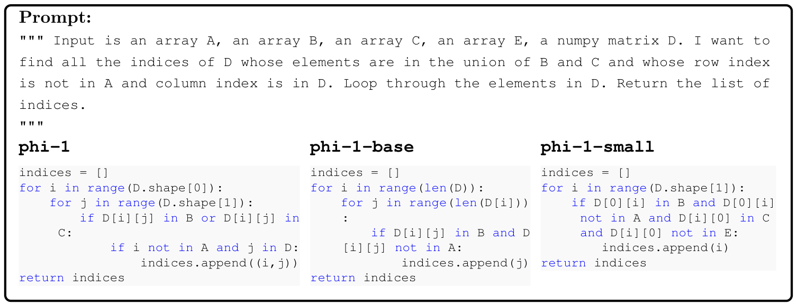
A.2 微调提升模型使用外部库的能力
PyTorch 示例。在这个 PyTorch 例子中，我们要求模型编写经过修改的 gradient 更新：
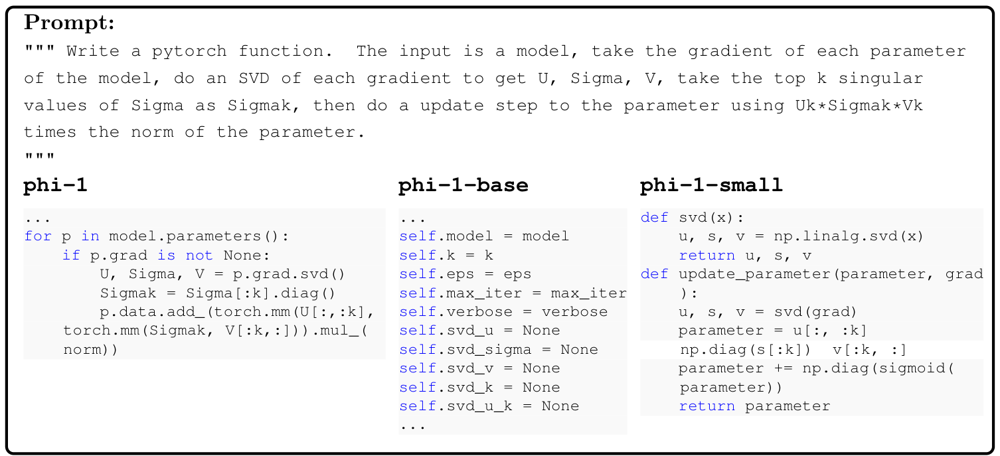
phi-1-small 的代码暴露了 API 使用能力的不足与理解上的局限，导致多个重大错误。首先，它使用与 PyTorch tensor 不兼容的 np.linalg.svd(x)。其次，它错误地把 SVD 结果直接赋给参数，偏离了提示要求的相加操作。另一方面，phi-1-base 完全不知所措，只生成一串无意义定义。这表明，提高模型的逻辑推理能力，即使只针对简单函数，也能够大幅增强通用编程能力。
Pyplot 示例。最后一个 API 示例是 Pyplot 应用。模型通常擅长 Pyplot，因此我们设计一个有挑战性的任务，要求模型实现动画。
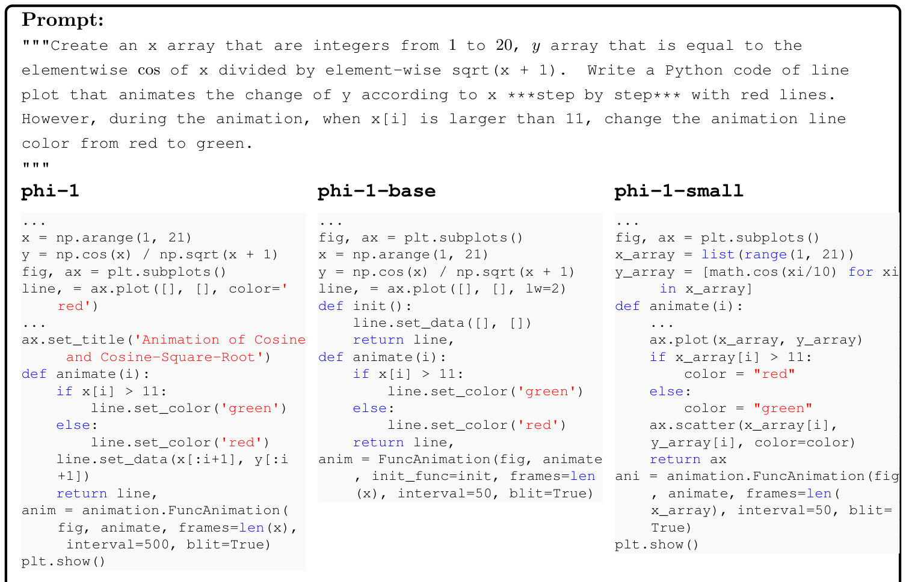
phi-1-small 生成的补全非常错误。从 API 角度看，模型未能理解“折线图”的要求，只使用散点图，而且散点图本身也实现错误。phi-1-base 得到了正确的模板，但漏掉了每次迭代更新折线图的核心功能。
B phi-1 的局限性
虽然通过简单练习微调显著增强模型整体性能，但模型本身存在一些仅靠微调无法克服的约束。首先，模型只有 1.3B 参数，训练仅使用 7B token，这限制了它处理更复杂任务的能力，例如与 StarCoder 等模型相比，开发复杂 Flask 应用的能力。除了相对于 StarCoder 或 ChatGPT 的通用性局限外，我们还列出以下其他弱点：
对提示变化的敏感性。模型对提示的各种扰动都很敏感。首先，提示长度增加时，其性能显著下降，因为提示过长时，模型倾向于忽略、遗忘或误解其中一部分。例如，下面的例子中，当层数从 3 增加到 4 时，模型就失败了。我们假设，这一问题是因为我们的练习主要由短提示构成。此外，稍微修改提示，生成结果就可能表现出质的差异。在本例中，额外增加一条 import torch 命令后，模型倾向于成功完成此前失败的同一任务。
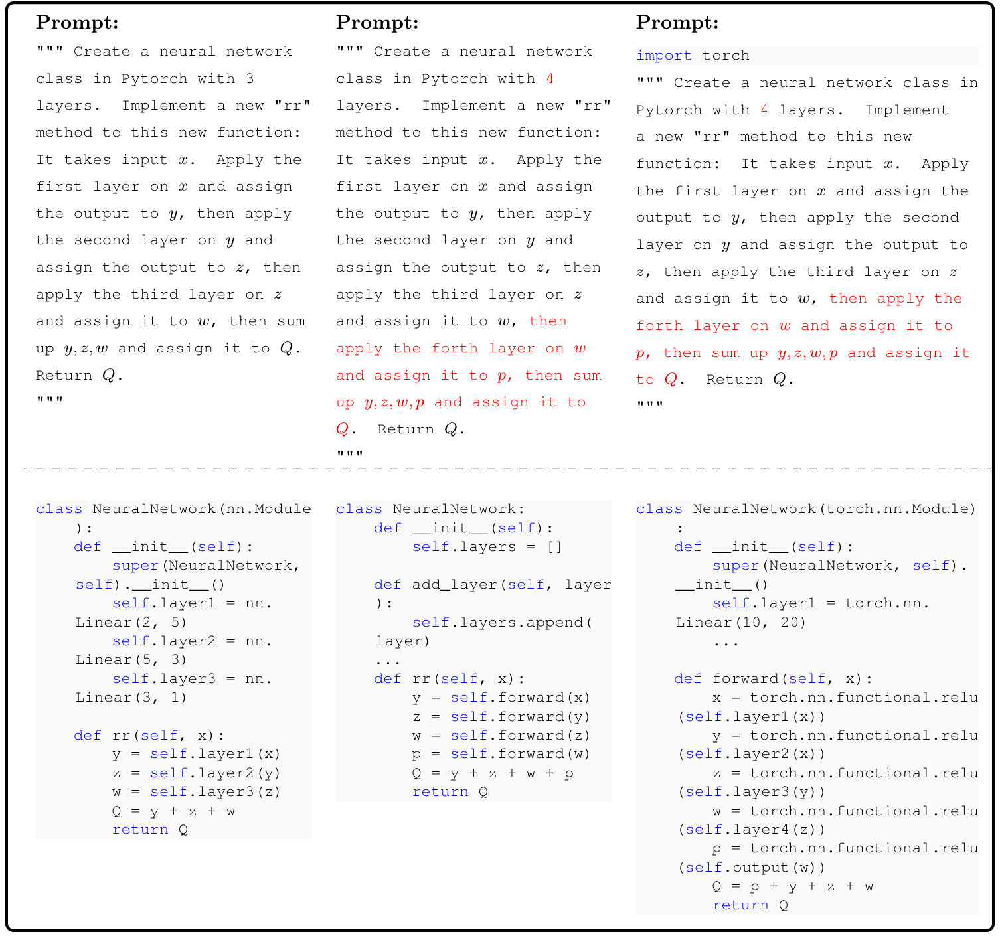
对自然语言输入的敏感性。与 ChatGPT 或 StarCoder 相比，phi-1 处理自然语言时不够稳健，尤其是提示存在歧义时。这可能是因为，为确保教材级质量，我们从训练过程中滤除了某些类型的数据。例如，模型难以处理“unchanged”一词，也难以理解提示中的编号列表。
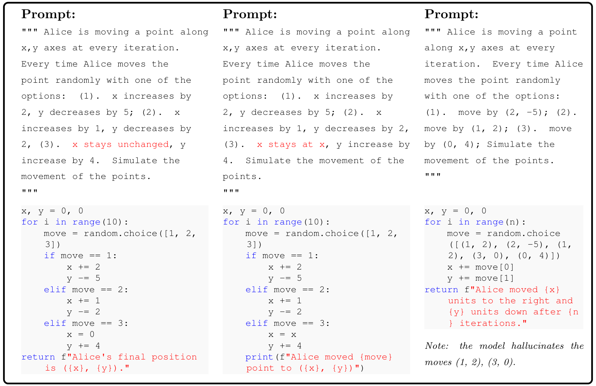
不擅长计数与空间推理。模型的一个主要约束，尤其与 StarCoder 等替代模型相比，在于涉及计数与空间推理的任务表现。模型难以持续精确保留场景中元素数量与位置的信息。以下例子可作说明：
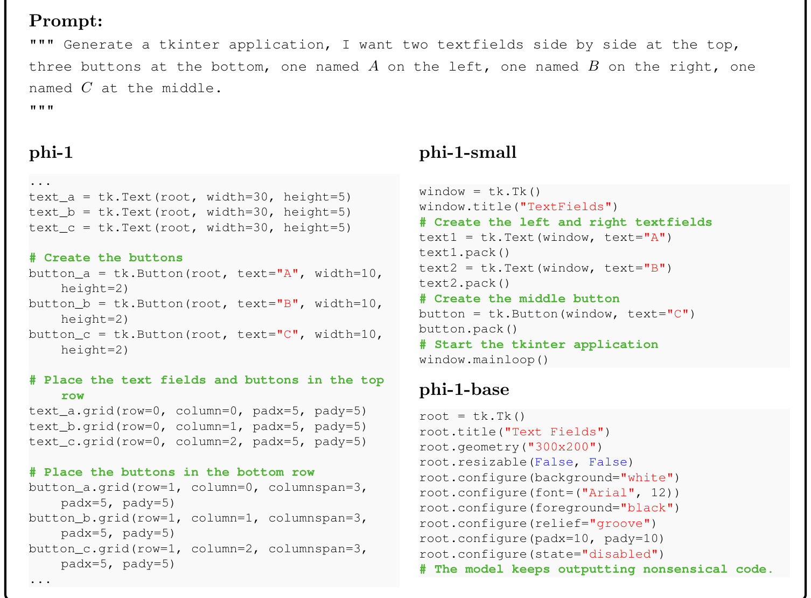
尽管微调有所改善，模型仍难以处理计数和空间推理。它生成了一个多余文本框，并将按钮放在场景中的错误位置。
C 第 5 节的示例
本节提供在不同 AST 匹配率下捕获的代码对示例。此外，提供一个以 embedding 距离作为相似性度量得到的代码对示例。
AST 匹配率 = 1.0。这些编程问题需要相同的推理，但提示措辞可能差异很大。特别是，提示使用现实事件——一条线上孔洞之间的距离——隐式教会模型在数组中寻找最接近元素对这一基本推理任务。
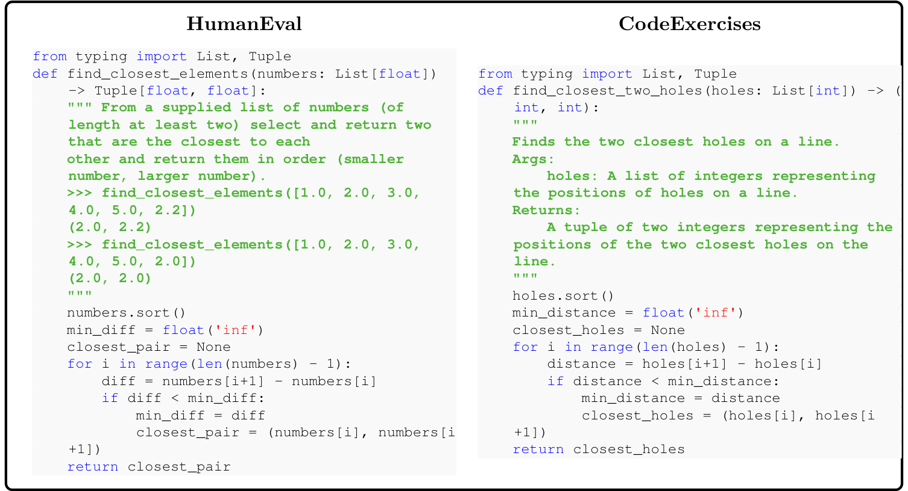
AST 匹配率 = 0.96。这两个问题使用相似的推理和编程概念，但提示要求不同任务，即返回一对数字，或计算它们的平均值。
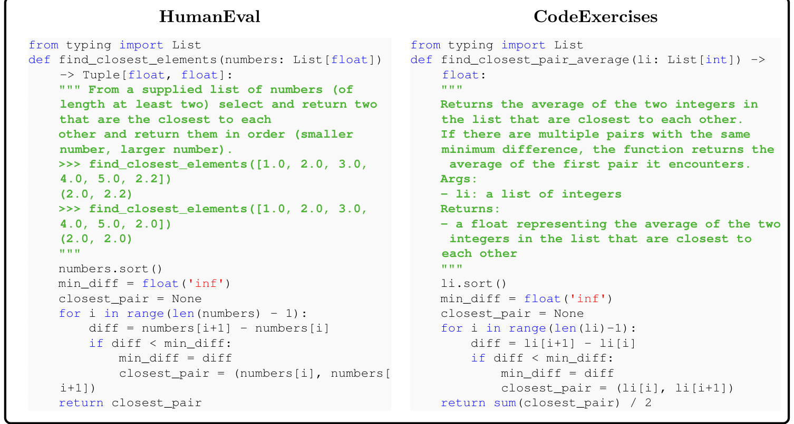
AST 匹配率 \(\leq0.9\)。当 AST 匹配率 \(\leq0.9\) 时，代码对的相似性开始降低，如以下两个例子所示。这里的 AST 匹配率分别为 0.9 和 0.83。
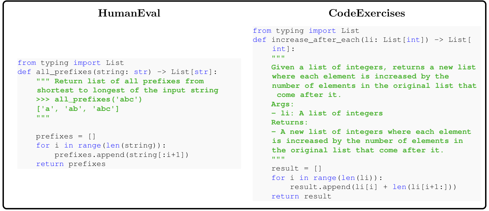
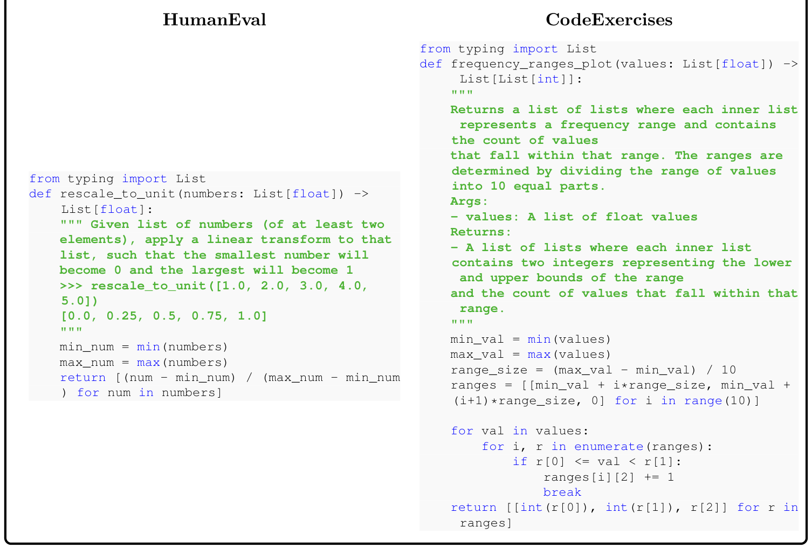
Embedding 距离 = 0.16。这两个问题的 Python 文档字符串、函数名与代码结构相似；通过计算各自归一化后的 CodeGen-Mono 350M embedding 之间的 L2 距离，可以提取这种相似性。
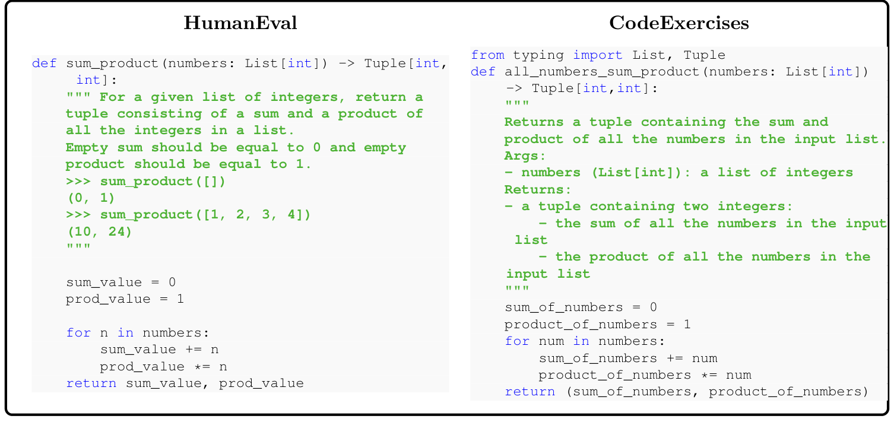